Berck 2011

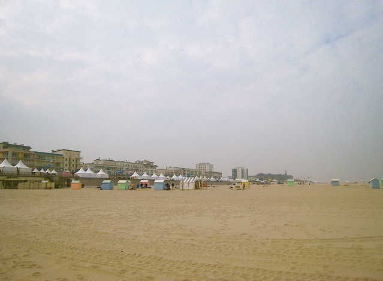
Berck, 10 jours de cerf-volant sur une somptueuse plage... Et une Excellente organisation ! Il y en a pour tout le monde : les pilotables, les monofils, les gros gonflables, les tractionnistes, sans oublier les Jardins du Vent ! Bien sûr, il faut aussi trouver les sous, et il y a maintenant des barnums d'un bout à l'autre de la Promenade, et même plus loin à gauche que l'Entonnoir...

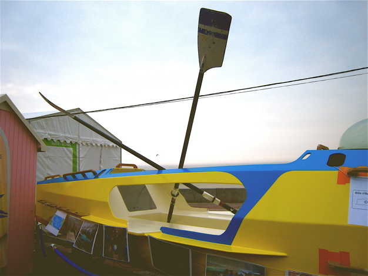
Tout au bout à droite, un volontaire pour la course de la traversée de l'Atlantique à la rame cherche des sponsors, lui aussi...

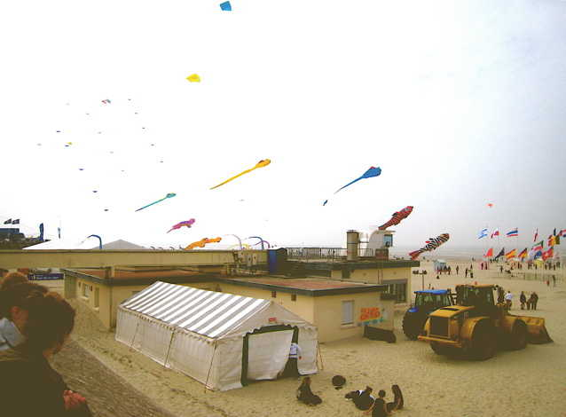
Les Awitas sont là, avec entre autres leurs trains de deltas ! et bien d'autres, avec des raies, des lézards et des poissons divers...

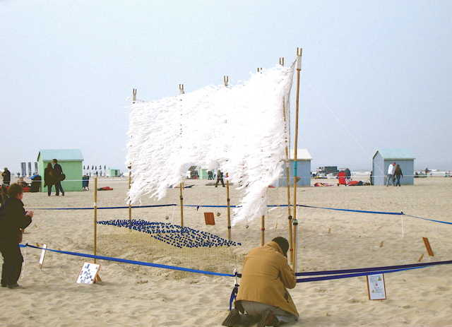
Aux Jardins, Patrick et Annick ont remonté leurs amusantes pomponnettes bleues et leur grand filet en forme de peau d'ours (blanc...) !

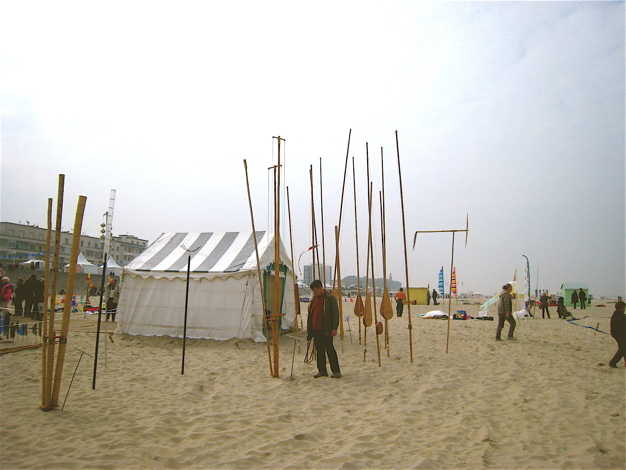
Didier Ferment est venu, et Bruno Tondellier a monté les instruments de leurs ensembles éoliens : fils vibrants, rubans, flûtes, etc !

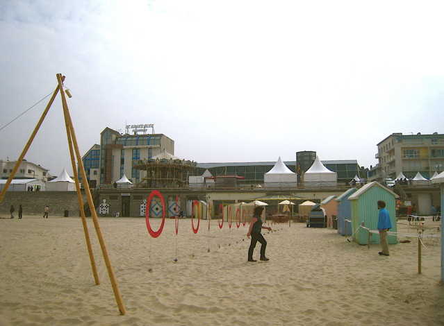
Didier (que l'on voit à droite) a aussi monté, avec les grands bambous qu'il aime, cet ensemble de cercles rouges qu'il assemblera selon différentes structures !

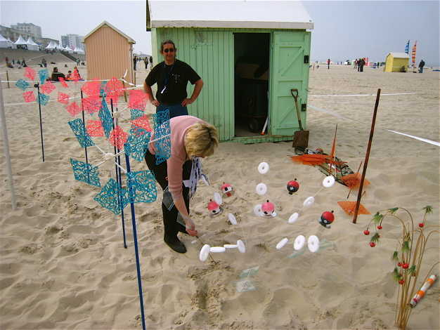
Les Ghesquière et en particulier Patricia ont planté leurs moulinets surtout à base de cuillers et autres accessoires pittoresques astucieusement assemblés ! Bernard l'aidera à la plantation, mais il roule beaucoup en char et fera aussi du monofil l'après-midi avec ses créations comme ses "Rois des Airs".

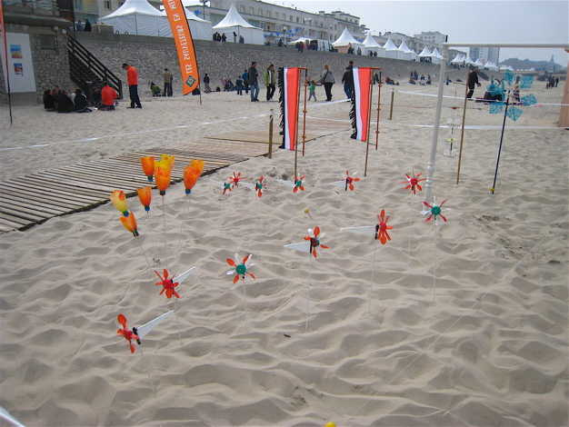
Des petits moulinets en cuillers, mais aussi des bouteilles colorées découpées...

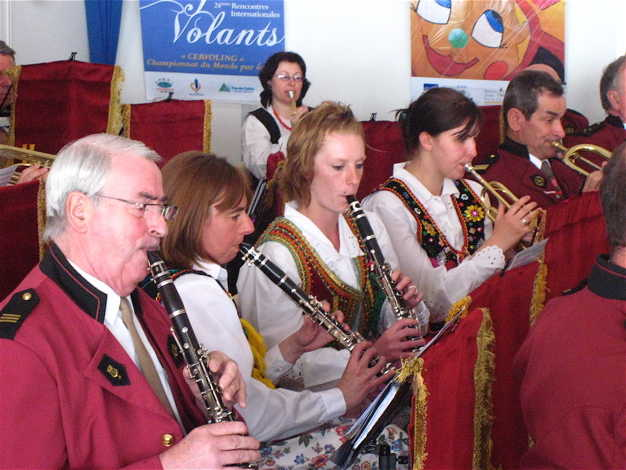
Pot d'inauguration, avec Marseillaise, discours et buffet apéritif généreux ! Deux orchestres alterneront pour que la musique soit continue, un local, et celui-ci d'origine polonaise.

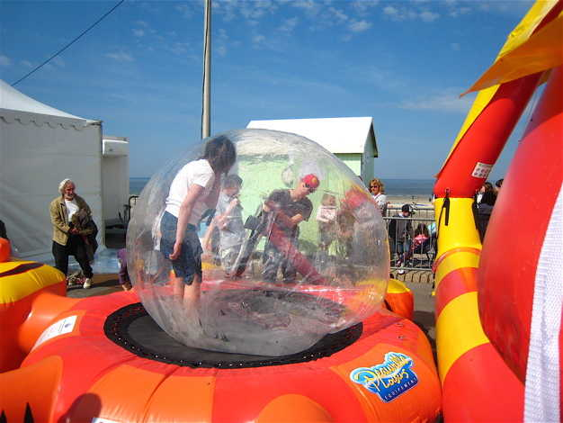
Sur la promenade, ils ont enfermé, affreux supplice, une jeune femme dans une bulle transparente qu'ils finissent de gonfler !

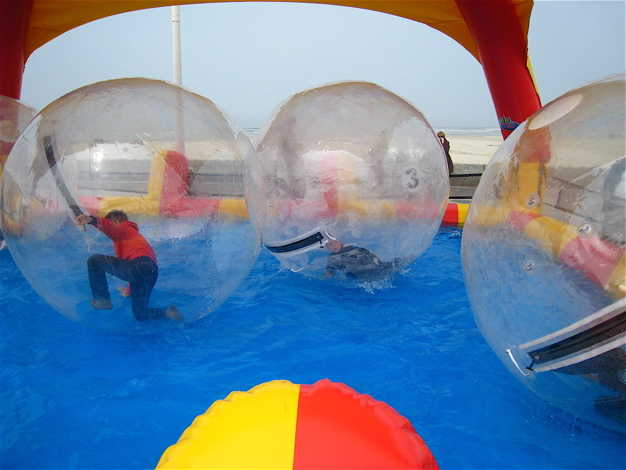
C'est simple : on pousse les bulles sur un bassin et les victimes consentantes essaient de rester debout, ou de courir pour se déplacer, voire se jettent sur le dos !

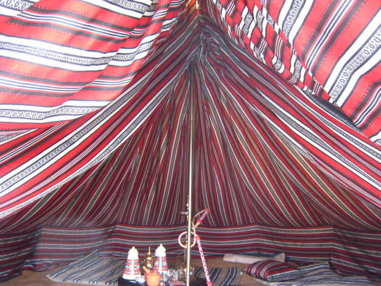
Il n'y a pas de vent pour les gros gonflables, mais l'équipe de Peter Lynn a monté sa pittoresque tente au bord de la surface dédiée !

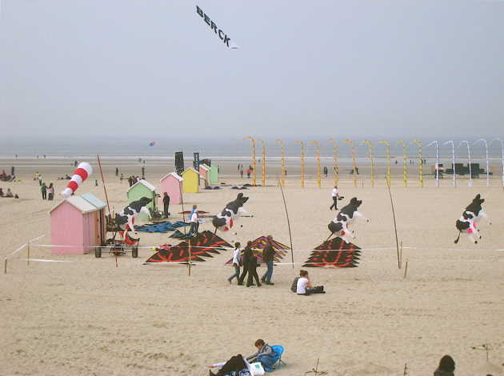
Dans la surface de démonstration, bien sûr, que des pilotables, deux ou quatre lignes !

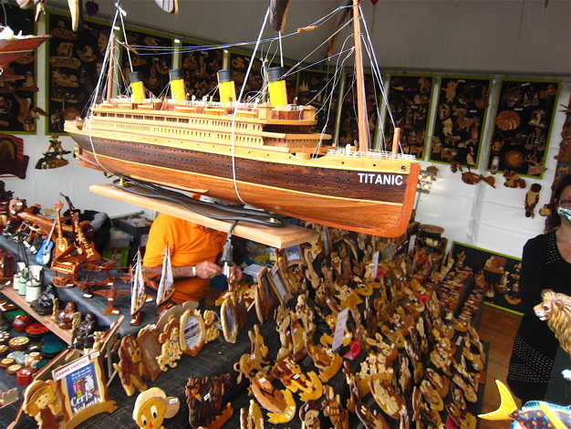
Dans les barnums que je verrai souvent au gré des allers-retours entre les surfaces et la tente VIP (où l'on déjeune), ce marchand d'objets en bois présente ce très beau Titanic !

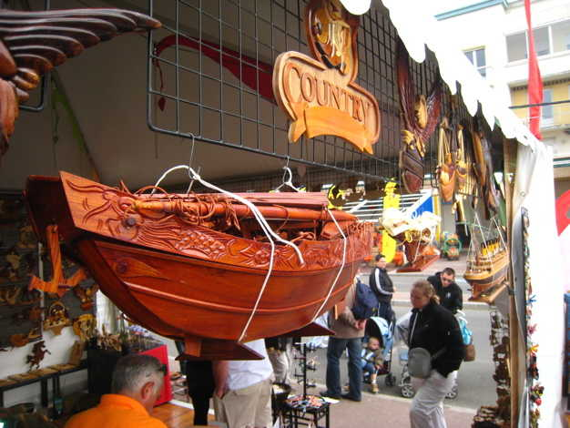
Il a aussi cette belle jonque sculptée, dans un bois coloré genre acajou, somptueux !

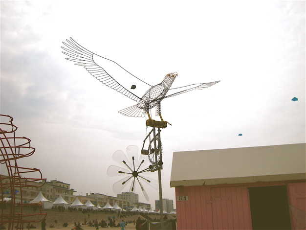
Joël Goupil s'est renouvelé, créant deux oiseaux voisins dont vous avez pu voir l'un à Trouville, voici l'autre, un peu plus grand à première vue, mais qui bat aussi des ailes !

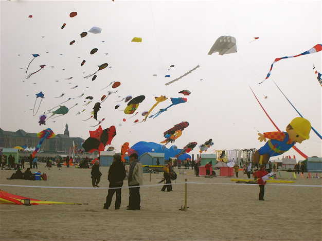
Côté gonflables, ça commence à être bien meublé, mais on dirait que l'ensemble du terrain du fond est en train de lever comme une miche de pain (bleue) ! Eh bien, c'est la dernière création de Peter Lynn, une raie de 150 m de long et... 75 m d'envergure !

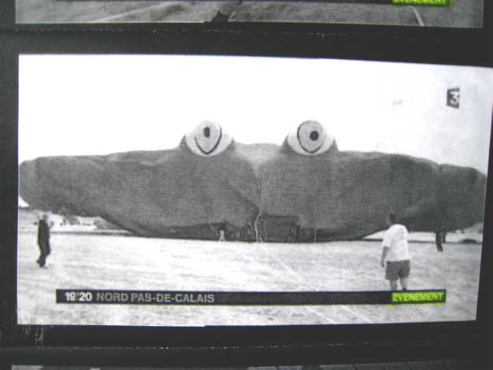
J'étais trop loin pour préciser, il y avait peu de vent, je pensais qu'ils gonfleraient juste un peu au sol pour essayer et donner une idée, et voilà ce que ça donnait à la Télé, impressionnant, non ?

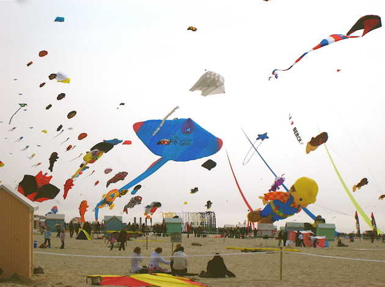
Ben, en fait, ça vole effectivement, et c'est même bien stable !

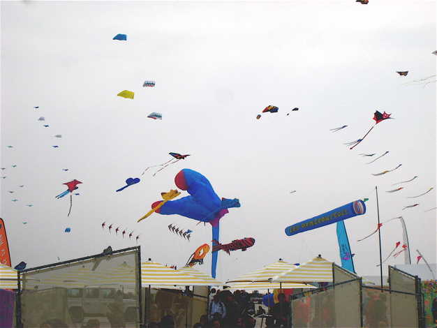
Ouille, de loin, je vois une aile qui remonte et rejoint l'autre façon papillon ! Je ne saurai pas ce qui a lâché, une ficelle, un ancrage. Ca n'a pas revolé cet après-midi là, en tout cas !

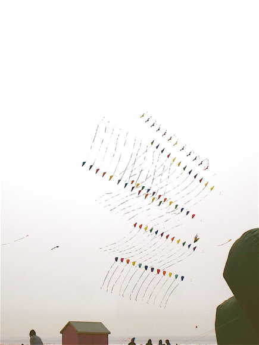
De loin, j'ai vu aussi de belles présentations, pas toutes dans l'aire de démo, comme cet ensemble de trains de deltas avec d'immenses rubans ! Six trains de 12 avec les rubans, ça meuble !

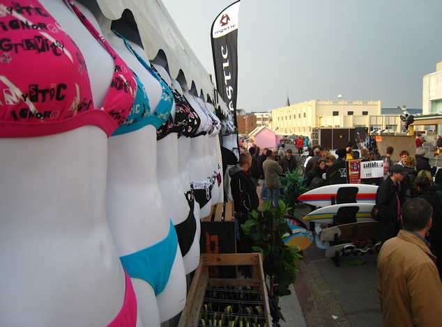
Sur la promenade, des marchands de tout, de planches, de Rollers, de cerfs-volants à petits prix que même nous, on n'arrive pas à les faire voler mais que les débutants viennent nous apporter au noyau CVCF avec un peu d'espoir dans les yeux !

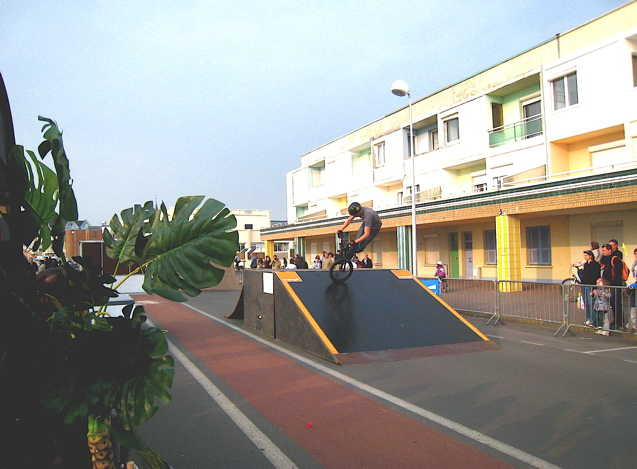
Tout au bout, un parc avec rampes et tremplins pour des vélos et des rollers s'offre aux acrobaties impressionnantes...

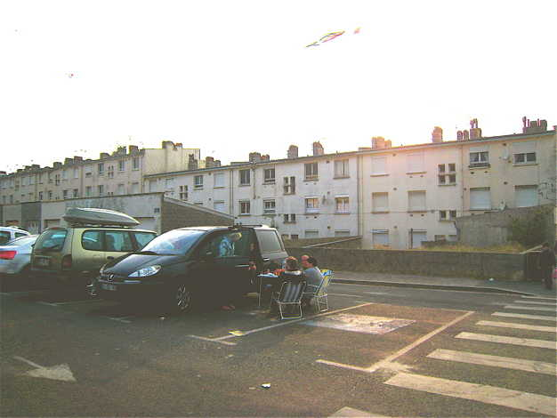
Il y a la mer, les dunes, les grands espaces mais cette petite famille a trouvé ce lieu très poétique pour la pause restauration.

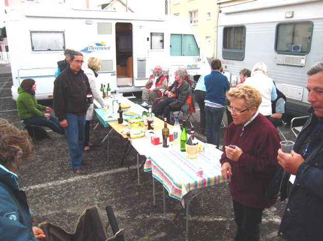
Sur le parking des campings-cars "cervolistes", 4 d'entre eux ont formé un carré, un patio où on peut se réunir tranquillement ! Ce soir, c'est pizza -partie, après un petit apéritif où chacun apporte ses contributions... Michel, à droite, CVCF 18, je crois, est invité bien qu'il ne dorme pas dans son véhicule (un scooter 50 cm3 qui l'emmène à tous les festivals !).

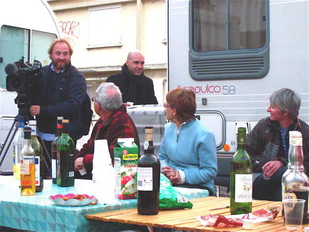
Je publie les photos, car, contrairement à certains avis, notre réunion ne manque pas d'intérêt, puisque même la Télévision est présente !

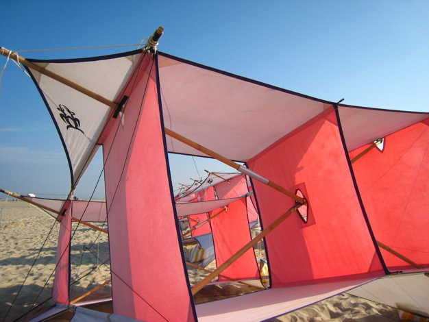
Daniel a, comme tous les ans, monté ses Saconneys bambou-coton qui resteront exposés toute la semaine au sol, comme les autres années, en attendant un Force 4 absentéiste encore en 2011 ! Comme ça, il a le temps de parler...

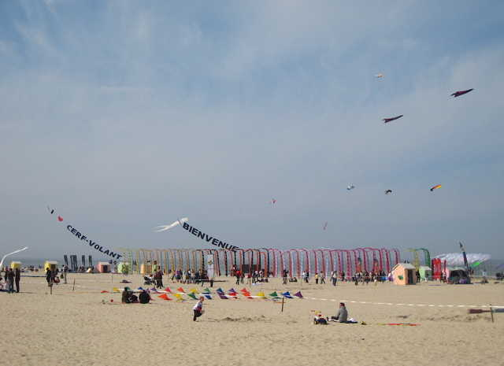
Derrière l'aire de démo, deux cerfs-volants portent des banderoles géantes dont le texte changera tous les jours, genre "Merci Berck", 'En RTT" ou même "Gérard Dieu" (>>>>>).

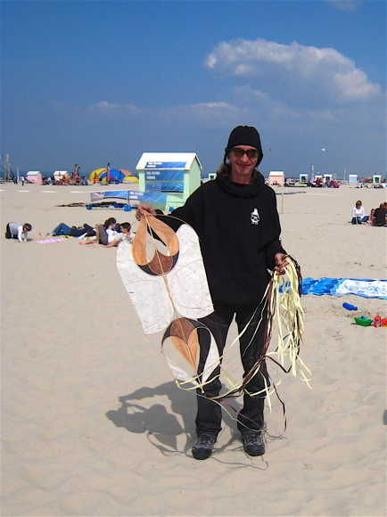
On retrouve avec plaisir Fabrice, qui a déménagé plus au sud et qu'on ne voit plus beaucoup sur les festivals. Il s'est mis à la construction de très beaux monofils bambou-papier qu'il fait voler régulièrement.

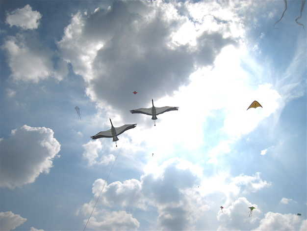
Je me suis installé avec le noyau CVCF dans une aire au-delà des Jardins du Vent. Aujourd'hui, je me suis attelé à faire voler mes deux grues ensemble (mai pas en train), sur la même retenue et reliées par des ficelles censées les tenir écartées ! Ca a marché quelques secondes, le temps de prendre une photo, mais ensuite, l'agitation a tout emmêlé, bouh !

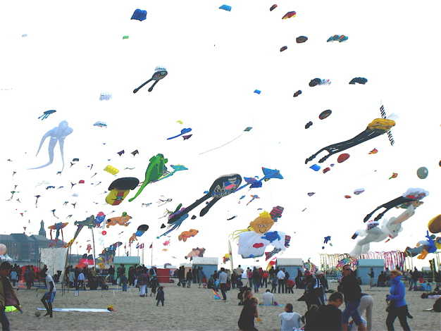
Pourtant, le vent est très bien, et il y a du monde en l'air ! Pas comme à Fanö où ça se déroule sur 10 km, mais presque !

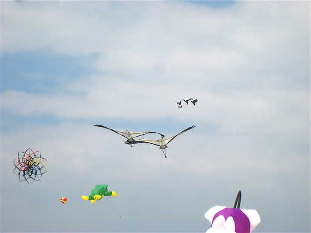
En désespoir de cause, j'attache les 2 grues ensemble et ça vole ! J'améliorerai encore un peu, car là, j'ai attaché où j'ai pu et elles sont un peu déformées !

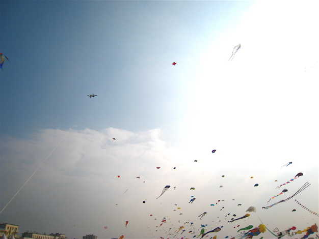
Mes grues volent assez pour les monter à une centaine de mètres, mais là, une rafale retourne une aile, elles ne tombent pas, mais je les ai ramenées à grande vitesse à ras du sol !

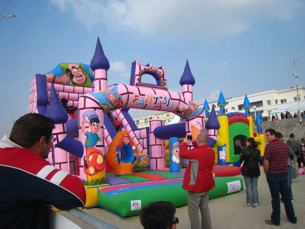
Sur la plage, un jardin du vent spécial pour les enfants avec des trampolines et un château très Disneyland. Ils en sont fous !

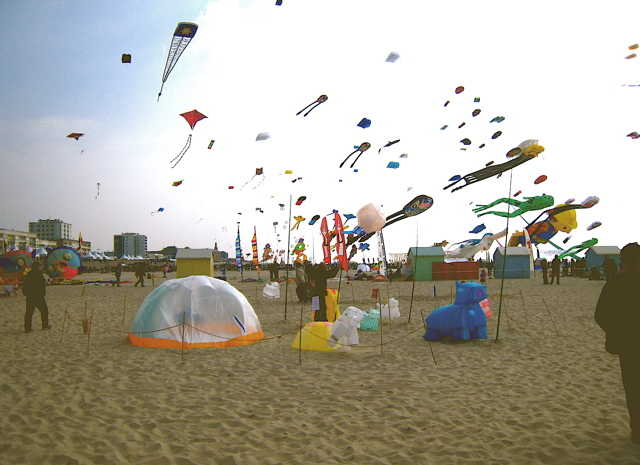
En bordure des Jardins, Gérard Rosenblatt a monté son éventail de créations plastiques en plastique : son igloo gonflé par le vent, ses chiens, ses belles méduses et son dernier-né, un éléphanteau !

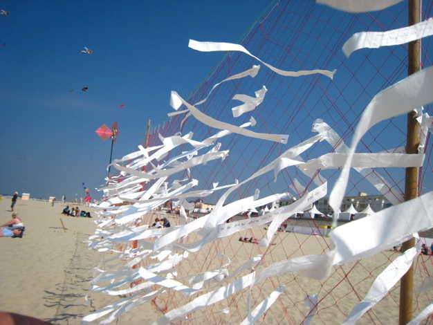
Les filets commencent à s'habiller des milliers de voeux formulés !

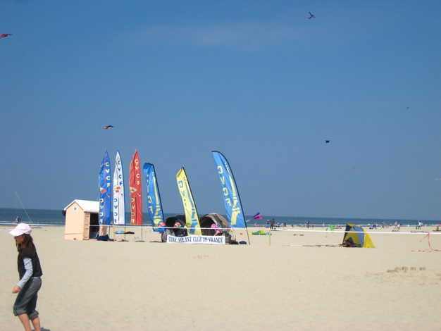
Voilà le noyau CVCF, avec ses tentes, ses bannières des antennes IdF et Alsace, et des cerfs-volants encore dans les sacs ! Gérard nous a accordé un cabanon qui évite bien des voyages dans le sable fin en traînant des chariots, ça m'épuise de plus en plus !

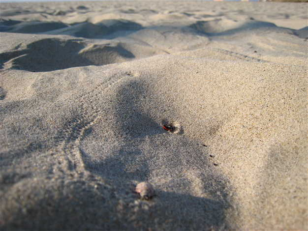
Ma tente (surtout le jaune) attire des petites bêtes noires et des coccinelles qui viennent sans doute les consommer ! J'en ai compté 11 par terre quand je l'ai secouée le soir ! Celle-ci semble devenue collante et a du mal à progresser... Une autre est comme une tortue : sur le dos, elle n'arrive pas à se retourner, dans le sable... Il a fallu que je lui donne un coup de main...

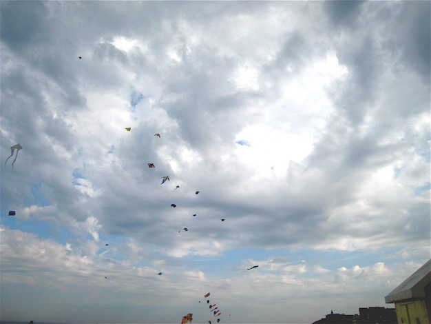
Plus trop de monde en vol, c'est l'heure que choisit Michel pour lancer son Météo, le point noir en haut à gauche de la photo !

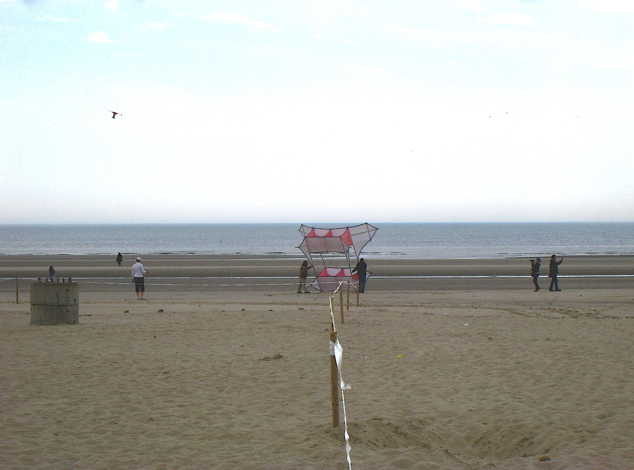
Le vent a un peu forci, ou le team en a assez de ne rien faire, il dresse UN Saconney pour l'envol...

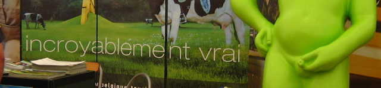
Passage dans les barnums, quelques expos, comme ce stand... de la Belgique, vous aviez deviné !

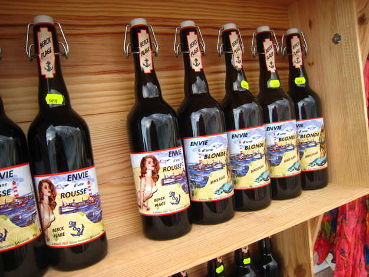
Plus loin, pour les obsédés, des bières attirantes à collectionner !

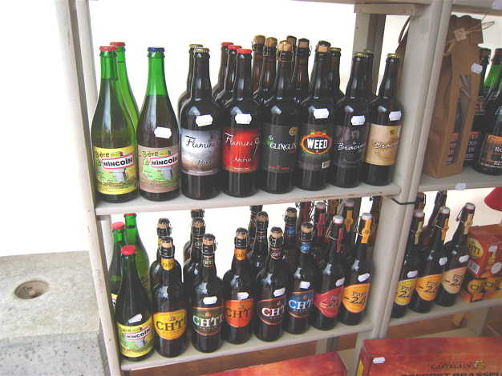
Et une autre collection, nordiste, celle-là !

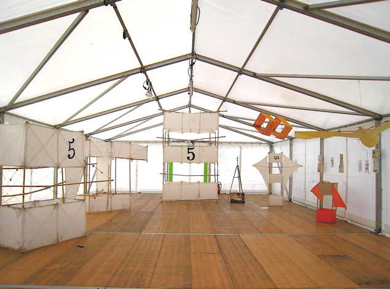
Christian Kolz a exposé ses cerfs-volants à l'ancienne, de construction rigoureuse !

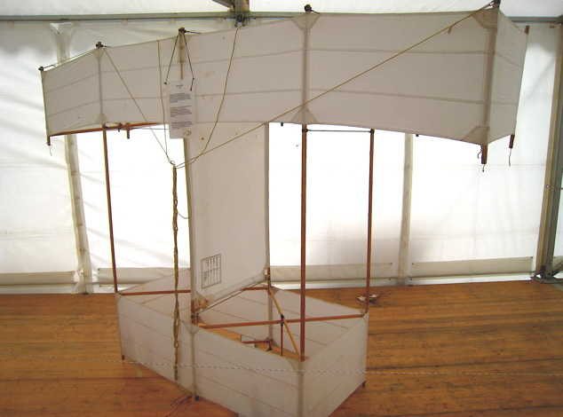
Celui-ci a une grande envergure pour une aile si mince, mais la rigidité en souffre un peu, au moins au sol.

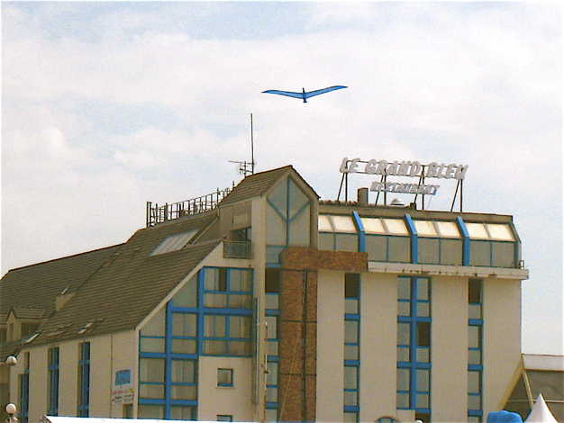
Aujourd'hui, j'ai fait voler mon Oiseau Bleu, pas grand comme le dit l'enseigne, mais je l'aime bien !

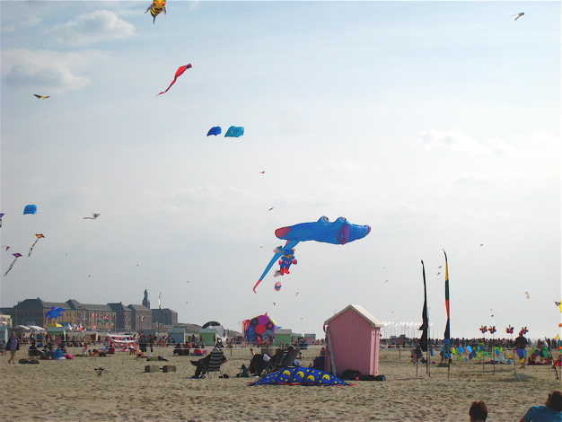
La vaste raie revole, ombrageant les terrains, mais qu'est-ce demain nous apportera de Nouvelle-Zélande ?

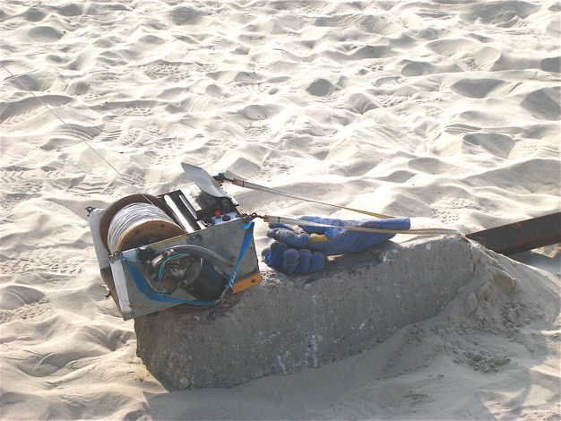
Cet aérophotographe, las de rembobiner sa ficelle, a conçu ce treuil à base de moteur d'essuie-glace. Il faut quand même tirer la ligne à la main, le treuil ne fait que rembobiner, et c'est aussi bien !

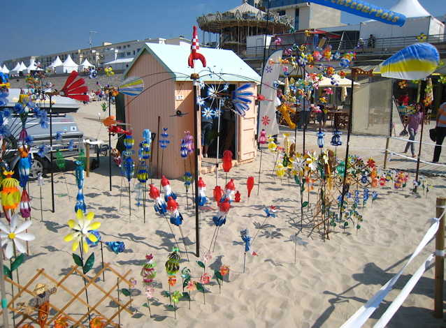
Côté jardins, Jean-Claude Anquier a bien sûr planté ses innombrables et variés moulinets à base de bouteilles découpées ! Et son Audimat ne baisse pas avec les années !

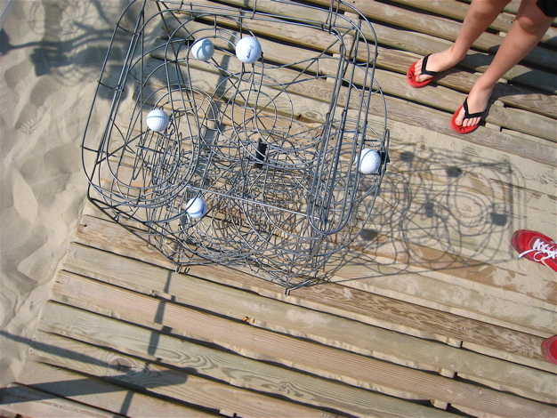
Joël Goupil a disposé encore ses chemins de billes avec leurs aiguillages et leurs chemins variés, en plus de ses oiseaux vus plus haut.

Emmanuel Duba a installé ses chats. Ses nouveaux, les grands au deuxième rang, tournent sur eux-mêmes avec le vent...

François Guzman a aussi amélioré encore ses moulinets de CDs !

Le filet vierge du début commence à s'enrichir des milliers de voeux rédigés !

Robert Trépanier a créé de nouveaux cerfs-volants pour accompagner le spectacle présenté par une petite compagnie canadienne : "la Machina Volante" !

Je ne peux pas dire que le spectacle lui-même m'ait enchanté, beaucoup de gesticulations et de vociférations, disons que c'est un "spectacle de rue"...

Pas mal de cerfs-volants en vol, entre ici et le terrain de démo. Et là-bas, les Flics et associés ont reconstitué leur Méga-team pour faire de belles figures : boules, tapis, etc... tout cela bougeant en synchronisme. Je suis admiratif !

Plus près de nous un élégant orque qui change des monstruosités habituelles !

Bruno Claes, qui assiste Daniel pour les ascensions humaines (enfin, pour leur préparation...) s'est fait faire une inclusion sculptée en 3D au laser dans l'intérieur du bloc. C'est bien aussi de profil, mais je n'ai pas réussi à bien le photographier !

Soirée calme dans le patio camping-car, après un petit apéritif ! Cette demoiselle (petite-fille de Patricia, je crois) a l'estomac creusé par le grand air, apparemment !

Aujourd'hui, vent de terre, plus irrégulier que la brise de mer ! Jacques a quand même pu monter son "terril" sous un flow-form de Michel Gressier...

Plus près, Patrick L'Higuinen a pu monter sous un de ses pyrodeltas blancs, cette amusante guêpe...

Jean-Daniel Chantelauze est content, il a réussi à dérouler (péniblement à la fin) ses mille mètres de ficelle sous son grand delta à damier.

Ce soir, c'est du sérieux au patio : repas en commun sur les multiples tables apportées par les participants !

Les Mouchague nous ont rejoint, avant leur grand départ en Mai pour Wokipi : 6 mois en Asie, puis 3 ans aux Amériques... Ils présentent les derniers ajouts faits sur leur Toyota 4x4 : phares, porte-Jerrycan, grilles, treuil, douche (externe), etc. et ce n'est pas fini...

Au matin, le vent est encore de terre et assez faible, mais Michel qui vient voler à 07h30, nous dira qu'il a été fort ! Pour le moment, c'est encore calme... Jos est arrivé avec... une de ses fleurs... Le CVCF a ouvert son cabanon et monte les bannières...

Le filet des voeux est de plus en plus rempli, certains sont sérieux, voire émouvants "Je veux me stabiliser dans ma vie, niveau amoureux et familial" !

Au-dessus de nos têtes, une étagère en losange Lecornu, je ne connais pas l'auteur, mais l'aspect et le vol sont impeccables...

En partant pour la plage, je passe devant cet établissement auquel son gérant a donné le nom d'un de mes cerfs-volants... C'est gentil, bon, promis, je le ferai voler aujourd'hui...

Chose promise, chose due, voilà, la bête est en l'air dans une agréable brise de mer bien régulière, même si pas très forte ! On n'aura d'ailleurs jamais de vent très fort, ni de pluie, voire de neige...

Derrière Jean-Daniel, un couple a dressé ces arches tricotées ensemble maille sur maille et du plus bel effet !

Le vent a un peu tourné, mais tant qu'il ne vient pas de terre ! Ces 2 grosses turbines sont esthétiques et vraiment impressionnantes...

Les Hollandais, je crois, ont sorti cet original éléphant vert joueur de foot bien gonflé...

On voit aussi monter ce beau cellulaire très coloré et au vol bien stable !

Voici le delta à carreaux de Jean-Daniel et le "militaire" de Michel Bérard... Celui-ci est une copie d'un cerf-volant ancien, en coton et baguettes de bois. Il a un vol très stable et n'est pas lourd du tout...

Au-dessus des terrains, de très grandes arches, peut-être de la famille Lejosne, et au fond, encore les Révos en formations évolutives !

Pour finir les après-midis, j'essaye de dérouler tout mon fil (seulement 250 m, je reste modeste...). Aujourd'hui, le vent baisse, et j'ai dû marcher jusqu'à la mer pour voir le bout !

Vendredi soir, soirée de gala sous la tente VIP et dehors pour profiter du beau temps. Apéritif, musiciens, édiles divers qu'on remercie, peu de vent et soleil...

Le soleil va se coucher derrière ces très admirées bannières-arbres... C'est grandiose d'être sur la plage avec des amis, un verre à la main, et avec ce spectacle !

Tout le monde rentre dans la tente, l'orchestre s'est un peu déguisé! Un Allemand vient au micro chanter des chansons de chez lui, soutenu par ses copains et l'orchestre qui sait tout faire...

Bon, passons aux choses sérieuses, tout le monde se lève pour ne pas être dernier devant le buffet... La tente VIP a été débarrassée de ses cloisons pour permettre de dresser toutes les tables, les dessertes des buffets à chaque bout, et une estrade...

Et voilà, les conversations tombent, les assiettes pleines commencent à se vider ! Géraldine a déjà fini la sienne, ou n'a rien mangé !

Par les grandes baies, on voit la plage et cet ascète (ou cet accro d'Internet) qui s'escrime dans le noir sur son clavier à la lueur de son écran !

Quelqu'un a distribué des montgolfières en papier complètes, avec support et brûleur ! Tout le monde sort pour les mettre en vol ou pour les regarder... Il faut juste les déplier et trouver un briquet pour allumer la "mèche" en papier imbibé et compressé.

Et voilà, les ballons se gonflent, on attend un peu qu'ils chauffent et que la portance devienne positive...

Un gros essaim est parti, on en comptera une quinzaine en vol simultanément ! Elles partent sans risque vers le large, à petite vitesse, le vent est quasiment nul...

Samedi matin, nouveau trajet de mon fourgon au terrain. Le nouveau parking des campings-cars est tout au bout de Berck, mais finalement plus près, pour les jardins du vent comme pour notre aire de vol... Et, comme le CVCF a un cabanon, je peux partir les mains dans les poches, quel soulagement ! Il n'y a que les trajets Campings-cars/tente VIP qui sont longuets, mais on n'y peut rien...

Sur le modèle des "lanternes", créées à Hirel par Eric Stempell pour l'atelier CVCF, Guy Verdier a réalisé en plus grand et avec une queue particulière ce "lampadaire" qui fait ici presque son premier vol !

Samedi midi, pot officiel du CVCF à son cabanon pour ses membres et ses sympathisants qui sont nombreux à cette occasion... Nous serons une bonne centaine !

Bien des voeux encore : "Je veux avoir un petit garçon cette année 2011" ...

Les filets des voeux sont maintenant quasiment pleins, mais on peut encore tasser ! Un voeu, presqu'une invite : "Mon voeu c'est d'avoir de l'argent pour une voiture. Isabelle Pxxxxxx.... 06 xx xx xx xx"...

Encore plus direct, juste le n° de portable!

Les Darnis nous ont rejoints, Michel a supprimé les cacophones (qui nécessitaient une maintenance constante) et créé des balises plus fiables et moins bruyantes, toujours en fil de fer majoritaire... Les drapeaux sont lestés en bas et oscillent aux vents...

Sur notre terrain, derrière une menaçante pieuvre, ce cellulaire formé de deux triangles de cellules en losange est très esthétique !

Brise de mer, toujours un beau rassemblement de cerfs-volants !

Tombé devant la "micro-caravane" des Hurricanes, j'ai bien aimé ce cerf-volant rouge, noir et blanc, que j'ai hélas photographié trop tard, la tête en bas et au sol...

Voici l'éléphant de Gérard Rosenblatt, aussi carré que ses chiens (à droite, le gros noir)...

Le vent est bon, pas trop fort et pas trop faible, je sors Megoel qui fera un beau vol en altitude!

Bruno Tondellier et les Ventcourtois ont sorti leur navette poids-lourd pour larguer des bonbons. Pas besoin d'annonces ou d'enceinte spéciale, les enfants sont là dès le premier largage !

Il met des papillotes à ses bonbons qui tombent plus lentement, c'est plus spectaculaire et il y a moins de mêlée au sol comme cela !

Il fait de plus en plus chaud pour la saison et les baigneurs(euses) adoptent la tenue d'été !

Je fais un petit tour tout au bout, où les Pirates se sont installés, avec des Gwenn épisodiques... Ils pratiquent toujours de l'entraînement à des présentations en équipe...

Apparemment, ça tire sur les bras, même à la verticale !

Au soir, ils sont invités à l'apéritif au patio, avant le repas. Jean-Mi a apporté une bouteille d'un redoutable poison...

Samedi soir, vol de nuit. Les participants au spectacle volent en pleine lumière, les autres... où ils veulent. De temps en temps, un petit coup de poursuite vient se perdre sur nous...

Pris de mon emplacement, entre les deltas des Awitas et une grande raie, voilà le spectacle, il y a des danseuses, il paraît qu'il y a eu des chevaux !

Je vous explique la photo n'est pas très parlante : ce sont des deltas blancs qui portent dessous des fontaines lumineuses tournant horizontalement ! C'était très beau...

Le feu d'artifice qui a suivi était splendide. Suivi est une façon de parler car nous étions restés en l'air, c'était très impressionnant de voir les fleurs lumineuses s'ouvrir sur nos têtes comme pour nous engloutir...

Les artifices se succèdent et se côtoient, tous différents et magnifiques, même si la photo les fait paraître un peu grêles...

Les rosaces qui tombent en tourbillonnant ont particulièrement impressionné mon appareil ! L'ensemble était bien mais le bouquet final énorme et magistral...

Dimanche matin, pas de vent. Mais que font ces gens, dont Emmanuel Duba, qui regardent à la verticale...

Si vous connaissez Emmanuel, vous avez déjà trouvé : il a profité de la météo pour monter son ballon captif, sa nacelle et son chat à une altitude inhabituelle !

Pas de vent, ça tombe bien, c'est l'heure de la parade dans les rues de Berck pour que tous les commerçants voient un peu les cervolistes et propager l'ambiance festive... Les Géants ouvrent la marche...

Cette dame agitera sa petite culotte à dentelles à tous les vents... (C'est un cerf-volant pilotable-monofil de Karl Longbottom, en fait !)

Cette marionnette bouge les bras, la tête de haut en bas et de gauche à droite et roule des yeux! Elle est télécommandée par son créateur dont on voit les mains sur la commande derrière...

Derrière les géants, ce malheureux défiguré gaulois commande la progression...

Tout le monde passe joyeusement dans les rues de Berck au son des divers orchestres, en agitant des bannières !

Au bout de la rue, ce magnifique Trike, dérivé des motos-neige et qui doit bien jouir des conditions météo favorables !

On croise aussi une calèche promène-touristes, menée par 2 robustes chevaux de trait...

Sur notre surface, toujours, qui attire les vrais cerfs-volants, ces boîtes un peu complexes avec de petites dérives annexes qui doivent les stabiliser...

Olivier, dit Prof, arrive pour faire des largages sauvages d'oeufs de Pâques (oui, c'est Pâques). Son procédé : un sac fermé par du velcro qu'une ligne parallèle à la retenue arrache : les oeufs tombent ! C'est sûr et indéréglable. Il largue sans vergogne au-dessus des baigneurs allongés qui voient soudain débouler sur eux une horde sauvage d'enfants affamés !

Outre ses pieuvres, qui manquent un peu de vent aujourd'hui, Sylvain Goeury a créé d'amusants diablotins rouges de différentes tailles qui s'échelonneront le long de la ligne...

Dimanche, dernière soirée, les départs commencent... Ce participant a créé sa caravane à lui ! Les grosses roues ne sont pas destinées à parer un retournement, mais sont celles de son char qui occupe la moitié de l'attelage ! A l'intérieur, à part dormir, on ne doit pas pouvoir faire grand-chose !

Les Mouchague partent aussi, on ne les reverra sans doute pas avant leur départ mi-Mai pour l'Asie... Ils ont créé le site WOKIPI où l'on pourra s'informer sur le projet et suivre leur progression tout au long du voyage, sous-tendu par l'aérophotographie...

Ils posent encore devant la mappemonde sur laquelle sera tracé leur itinéraire qu'on souhaite long et fructueux...

Et voilà, ça roule, un premier avant-goût du départ avant le départ !

C'est le dernier jour, mais ça vole encore pas mal. On revoit les avions biplans gonflables disparus des terrains depuis longtemps, peut-être à Tycho qu'on ne voyait plus non plus...

Nos voisins ont choisi le dernier jour pour sortir leurs splendides manches à air très colorées, avec entrelaçage, protubérances, etc !

Des mêmes auteurs, mais plus petites, j'adore ces formes originales et assez incroyables !

Les Jardins du Vent avec le filet des voeux... Tiens, il n'en reste que la moitié ???

Ah non, la revoilà, elle vole pour que les voeux puissent mieux monter vers les Dieux qui les exauceront... La deuxième moitié est en train de cheminer en bas, aux mains des Jardiniers qui s'unissent symboliquement dans cette action d'espoir...

C'est réussi, un grand succès auprès des spectateurs, et tous les voeux volent comme prévu secrètement au départ !

Je déjeunerai encore à Berck à midi. Les serveuses se sont parées de coiffes bigoudens pour notre plaisir. Le menu sera aussi agrémenté d'une crêpe servie avec le sourire, un bon souvenir de départ...

Départ au début d'après-midi, je suis retraité et donc j'ai tellement de choses à faire, dont ce reportage accaparant ! Je fais quand même un peu de tourisme pour passer par exemple à Saint-Riquier, bâtie autour du monastère fondé en 625 par... Riquier, bien sûr, son abbatiale, son beffroi, ses remparts et son Hôtel-Dieu...

Au hasard de mes pérégrinations, je passe à Heudicourt devant cette charmante maison picarde en brique (la façade en pierre a été plaquée sur la brique ultérieurement pour faire riche)...

En face de la "maison", une jolie allée s'étend sur environ 1 km, bordée de quelques arbustes ! Je l'emprunterai pour rentrer à la maison...
Berck 2011 : Encore une splendide et inoubliable édition ! A cause de la météo clémente, évidemment, mais aussi des efforts de toute l'organisation pour... organiser, et répondre rapidement aux désirs ou aux problèmes de chacun... avec le sourire ! Et toujours beaucoup de cervolistes, bien que les nouveautés se fassent rares, en nombre sinon en volume...